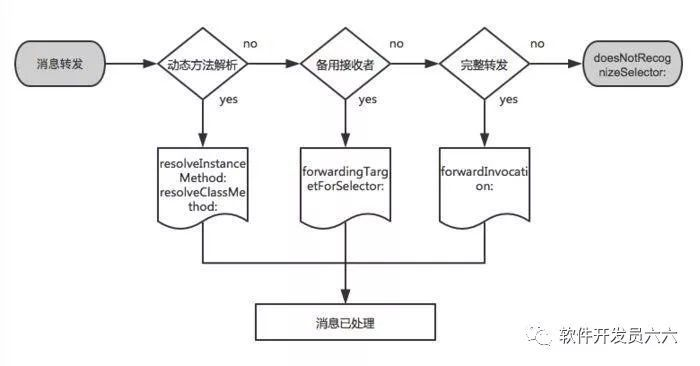

Runtime 消息分发机制
像对象发送一个消息，会在 Runtime 中调用：
objc_msgSend(receiver, selector, arg1, arg2, ...)
消息转发
消息转发机制基本分为三个步骤：
- 动态方法解析
- 备用接受者
- 完整转发
第一步：动态方法解析
对象在接收到未知的消息时，首先会调用下面方法：
+ (BOOL)resolveInstanceMethod:(SEL)sel
+ (BOOL)resolveClassMethod:(SEL)sel
示例：
#import <objc/runtime.h>
- (void)viewDidLoad {
[super viewDidLoad];
[self performSelector:@selector(unknownMethod)];
}
+ (BOOL)resolveInstanceMethod:(SEL)sel {
NSString *selectorString = NSStringFromSelector(sel);
// 对 unknownMethod 方法的调用被截获了并在 dealWithExceptionForUnknownMethod 函数中进行了处理，程序没有再崩溃。@dynamic 属性就可以用这种方案来实现
if ([selectorString isEqualToString:@"unknownMethod"]) {
class_addMethod(self.class, @selector(unknownMethod), (IMP) dealWithExceptionForUnknownMethod, "v@:");
}
return [super resolveInstanceMethod:sel];
}
void dealWithExceptionForUnknownMethod(id self, SEL _cmd) {
NSLog(@"%@, %p", self, _cmd); // Print: <ViewController: 0x7ff96be33e60>, 0x1078259fc
}
第二步：备用接收者
如果在第一步还是无法处理消息，则 Runtime 会继续调用：
-(id)forwardingTargetForSelector:(SEL)aSelector
如果一个对象实现了这个方法，并返回一个非 nil 的结果，则这个对象会作为消息的新接收者，且消息会被分发到这个对象。当然这个对象不能是 self 自身，否则就会出现无限循环。当然，如果我们没有指定相应的对象来处理 aSelector，则应该调用父类的实现来返回结果。
- (id)forwardingTargetForSelector:(SEL)aSelector {
NSString *selectorString = NSStringFromSelector(aSelector);
if ([selectorString isEqualToString:@"unknownMethod2"]) {
return [[RuntimeMethodHelper alloc] init];
}
return [super forwardingTargetForSelector:aSelector];
}
第三步：完整转发
如果前两步未处理消息，那么接下来只有启用完整的消息转发机制了，这时候会调用以下方法：
- (void)forwardInvocation:(NSInvocation *)anInvocation
- (NSMethodSignature *)methodSignatureForSelector:(SEL)aSelector
对象会创建一个表示消息的 NSInvocation 对象，消息有关的全部细节都封装在 NSInvocation 对象中，包括：selector、目标(target)和参数。我们可以在 -forwardInvocation: 方法中选择将消息转发给其它对象。
- (NSMethodSignature *)methodSignatureForSelector:(SEL)aSelector {
NSMethodSignature *signature = [super methodSignatureForSelector:aSelector];
if (!signature) {
if ([RuntimeMethodHelper instancesRespondToSelector:aSelector]) {
signature = [RuntimeMethodHelper instanceMethodSignatureForSelector:aSelector];
}
}
return signature;
}
- (void)forwardInvocation:(NSInvocation *)anInvocation {
if ([RuntimeMethodHelper instancesRespondToSelector:anInvocation.selector]) {
[anInvocation invokeWithTarget:[[RuntimeMethodHelper alloc] init]];
}
}
doesNotRecognizeSelector
如果消息没有被处理，最后就会 走到 NSObject 的 doesNotRecognizeSelector
- (void)doesNotRecognizeSelector:(SEL)aSelector {
NSLog(@"doesNotRecognizeSelector");
}
使用案例
参考
